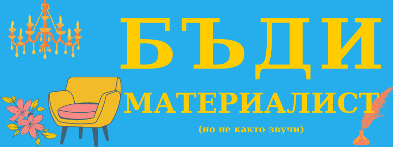

Бъди материалист
Често повтаряна сентенция е, че сме част от материалистично общество.
Но дали наистина сме?
Наистина ли ни е грижа за материалния свят, в който живеем?
Не е ли планетата ни в пламъци? реките ни мътни и без рибки? въздухът, изпълнен с дим и бензинови пари?
Обкръжаващата ни среда
Огледайте се около вас… не са ли паважите мръстни и с дупки? не са ли захвърлените опаковки разкъсани и разпилени? не са ли предметите в кухнята ви обикновени дори в сравнение с медните менчета от предишния век?
Днес трудно се намира дом, изпълнен главно с красиви и функционални предмети.
Обикновено когато ни потрябва нещо, се задоволяваме с първото, което успеем да намерим на приемлива или ниска цена. Което значи, че става въпрос за артикул, най- вероятно произведен в Китай в големи количества; също че може да се счупи всеки момент.
Предметите, останали от баби и дядовци може да се окажат по- трайни от тези които сте купили миналата година.
И това не е задължително защото са евтини. Скъпа техника като смартфони, бойлери и печки също се чупят по- рано от очакваното. Нищо чудно да може да си опечете пай в “Раховец” от миналия век, но не и в уред, инсталиран преди 10 години.
Това се дължи на така нареченото “планираното остаряване”, при което компаниите нарочно произвеждат продукти, които да станат неизползваеми или демодирани възможно най- бързо с идеята клиентът да си купи нов, както и да елиминират несигурността- дали ако нещо може да се ползва дълго, ще искат да го сменят с по- модерно или ще им върши работа за постоянно. Икономистите предлагат тази стратегия през 30-те години по време на Голямата депресия.
Разбира се, освен че е досадно да трябва да сменяме по- често всичко от крушки до колела, това съставлява голямо пилеене на ресурси, както и предпоставка за замърсяване.
Затова Европейският съюз се замисля как да обезсърчи тази практика. Освен това все повече се появяват компании, които предлагат доживотна гаранция като швейцарските часовници, кубинките Dr. Martens или доста компании за ножове. Но естествено техните продукти са по- скъпи от тези на съответните конкуренти.
Но, ако не се замислим, евтиното може да се окаже скъпо. Ако си купим дреха, която се скъса на десетото обличане и трябва да я заменим, за една година ще платим толкова колкото за някоя, която трае десет години дори и цената й да е десет пъти повече.
Разбира се при този случай има и друг фактор, който се отнася до стила.
В крак с времето
Модата се мени постоянно, а дори напоследък все по- бързо и по- бързо. Едни неща са хит, а други отминали и смешни… до следващата вълна. Приятно е отвреме- навреме да разнообразяваме гардероба си. Но е хубаво в по- голямата си част той да се състои от непреходни артикули.
Това не значи всичките ви дрехи да са скучни и в черно или друг неутрален цвят. Може да решите, че не малката черна рокля е за вас вечна, а примерно дънки с класическа кройка или пък блуза на райета във френски стил. Те се смятат шик вече десетлетия, въпреки че са цветни и кажи- речи непроменени.
Друг трик за ограничаване е да не променяте тоалета, а аксесоарите и детайлите- ако се осмелите да експериментирате, ще се учудите колко различно може да изглежда един костюм например в зависимост от прическата, обувките и чантата.
Тенденциите идват и си отиват, но добрият вкус си остава.
Облеклото несъмнено е важен компонент от имиджа, който искаме да внушим, особено в бизнес средите. Но ако обръщаме внимание по- скоро на отношението и намеренията, а не на привидностите, ще получим достъп до по- богат и цветен свят, за който не сме подозирали.
Да не сме перфектни винаги също може да даде свобода на близките ни, че дори и работните ни партньори, да се почувстват по- спокойно около нас и да ни споделят повече от притесненията и плановете си.
Да, етикетът предполага изисканост, но преди всичко да накараш отсрещната страна да се чувства добре.
Ако носенето на по- нови дрехи ви прави по- спокойни и ви спестява грижи- не се тревожите от дупки, изтъркани лакти или че тъй като нещо ви е омаляло като ставате може да се види повече от това, което искате да покажете, не се чувствайте зле да си купите дреха, която ще носите. Но в такъв случай, бих ви препоръчала да се отървете от някоя друга- например нещо, което все си казвате, че ще носите, когато отслабнете пак, но не сте изваждали от гардероба от повече от две години.
Друг добър вариант са магазините за втора употреба- там понякога наистина може да се намерят необикновени парчета- такива, които обикновените магазини не биха държали ако не се продават заради десена, кройката или нестандартния модел.
И пак остава факта, че каквото носим и ползваме е направено скоро да стане безполезно: дори само заради някакво си болтче, всичко отива на бунището.
Ако не функционира- добре, но понякога ни се ще да си купим ново заради естетиката. Но старинните предмети може да имат свой чар- поръбен сервиз, пръстен с липсващ камък или книга с пожълтели страници може да ни напомнят на богата им история и да допринесат за неповторимостта им. Те също може да се възстановят в по- привлекателно състояние. Такава е идеята зад кинцуги, японското изкуство да се поправят счупени съдини с лак, примесен със златна или друга подобна прах.
А и се знае, че сме по- привързани към предмети, които сме направили със собствените си ръце. Това в така нареченият “ефект ИКЕА”- вложеният труд прави удовлетворението ни от резултата по- голямо. От една страна така чувстваме, че наистина притежаваме направеното, а от друга- сме горди от усилията, с които сме го постигнали, дори уменията ни да са нескопосани.
А днес имаме все по- малко възможности да създадем нещо.
Направено собственоръчно
В миналото, по- голяма част от това, което се е ползвало е било собствено производство: дрехите са били изплетени от вълната на овчицата, маслото, разбито от прясно изцеденото мляко, постройките- от дърво, отрязано в гората.
Днес, всички тези неща са сглобени от някоя фабрика, а отделните части са изработени в различни части на света.
Така вместо да създаваме околната си страна- да сме занаятчии, стопани или граждани, за нас остава само ползването, тоест да сме консуматори. В този смисъл, този въпрос става политически.
Също така постоянно ни се налага мнението, че успешни са тези, които строят, а не тези които поддържат или полагат грижи. Елън Мъск, който строи ракети е по- тачен от боклукчията или социлната работничка.
Така наречените строители се фокусират върху макро и механическите аспекти на проблемите. Те имат големи идеи и склонност към финансиализиране, тоест измерване на всичко с пари. Но ако имаме този възглед, пропускаме и обезценяваме усилията на милиони хора без които живота ни би бил доста по- труден и неприятен.
Освен това, когато хората знаят как да направят хиляда стола, но не и един, парадоксално в епоха на индивидуалзма сме все по- зависими от другите.
Това се дължи също отчасти факта, че сме насърчавани, когато нещо се счупи, да го заменим.
Ако отделим време, може да подобрим уменията си и да оградим живота си с незаменими вещи.
Разбира се, понякога не ни се занимава.
Не помага, че поправката често е 2 или 3 пъти по- скъпо от това да си купиш чисто ново. Все пак вместо да хвърляме, може да потърси оригинална идея за рециклиране- от скъсани дрехи може да се ушие пачуърк завивка, от натрошени стари дискове може да се сглоби украса за празник или стена, а от термофори може да стане нехлъзгаща се подложка.
Вместо да купуваме неща, с които да се показваме, добре е да влагаме повече в нещата, които правят ежедневието ни по- добро: мултикукър за да се храним редовно, матрак за да се събуждаме отпочинали.
Многото значения на вещите
Понякога искаме да демонстрираме богатство, което нямаме, но в повечето случаи освен да породи завист, това не подобрява живота ни.
В днешно време повече от всякога предметите са натоварени със задачата да показват изборите, които сме направили и кои сме. Вещите могат да са и знак за това, доколко успешни сме. Сега повече от всякога когато съдим за някого се водим по показността и личността му вместо по характера.
Но ако вземем случаен човек от улицата и го облечем в тоалетите на лейди Гага, това няма да промени същността му. Но пък може да промени отношението към него. Разбира се това го е имало и в миналото, но не в такава степен.
Освен за демонстрация, притежанията може да идват в живота ни от страх. Вярно, понякога те ни дават сигурност: да не останем в недоимък, да не се окажем изведнъж без нещо необходимо, да не сме по- долу от хора, които се считат за важни.
Но претрупаните пространства може също да ни натоварват психически: наум да се съобразявяме дали няма да се ударим в някой ъгъл; да мислим, че трябва да излагаме или ползваме някой подарък, който не ни харесва, но се чувстваме задължени да запазим; да имаме съзнанието, че всеки предмет се бори за малка част от вниманието ни.
Малките неудобство пък ни се струват незначителни: врата, която скърца или кош, в който се спъваме редовно, но те отнемат от мисловните ни сили. Ако можем с малко пари да си спестим нещо, което срещаме пет пъти на ден, си струва.
Не толкова защото си ще спечелим няколко секунди, но на първо място защото ежедневието ни ще тече по- гладко, и освен това ще променим настройката си: вместо да сме в борба с препятствия ще сме в режим решаване на проблеми и внимание към детайла. Именно това е качеството, което направи Стив Джобс толкова тачен предприемач.
Ако пък парите ни са кът, може да се замислим преди да ги даваме за привидно незначителни поправки, но ако живеем комфортно, няма смисъл да се мъчим, за да спестим нещо, което ще изхарчим за друго без да се замислим.
За да имаме по- малко проблеми, свърани с обстановката, все по- голяма популярност набира минимализма. Според тази архитектурна философия, трябва да имаме възможно най- малко вещи, които да са скрити или в ненатрапчиви цветове с малко акценти.
Друга подобна практика полезна за интериора е фън шуй, която цели да насочва потока на движение и енергията ци. Макар тя да се основава на съвети за справяне с дракон, всъщност на практика водят до създване на хармонична и предразполагаща обстановка.
Знаем ли от какво са направени нещата около нас?
Например в един обикновен тостер има над 100 различни материала. Дали знаем дори 5 от тях?
Според нидерланския журналист Майкел Куийперс четири са съществени за модерната ни цивилизация: бетон, стомана, торове и пластмаса, към които може да добавим и силиция, който се явява основа на съвременната електроника. За жалост, въпреки неоспоримите си предимства, почти всички изброени имат своя приност в замърсяването на въздуха, водите и затоплянето на планетата.
Вярно е обаче също, че материалът не е целият проблем, а отношението ни към него.
Това е най- очевидно при пластмасата, която сме научени да не ценим. Преди години, когато си вземеш лимонада, обикновено бутилката се връщаше за да се използва повторно; днес- отива директно в кофата. Автоматите за топли напитки пък пускат бъркалки дори да не са необходими за това, което сте избрали. Макар и малки като маса, когато се изхвърлят именно поради размера си се заклещват на странни места като ноздрите на тюлени.
Но да погледнем и торовете- несъмнено използването им може да позволи изхранването на повече хора. Проблемът е, че агрокомпаниите правят семената, така че да не се развиват, ако не се подхранят с химикали, които после се просмукват в почвата.
Ако имате интуиция, веднага ще познаете логиката на капитализма и най- вече неолиберизма: да се превърне всяко нещо в търговка стока, която да се подменя отново и отново.
Ценност на направеното
За това помага и факта, че след като доста неща, които привличат интерес, са във виртуалното пространство и съответно може да се копират по- лесно може да се убедим, че са по- малко ценни.
Но това не е безспорно така- в създаването на влог или инфографика може да са вложени също толкова въображение и усилия като в илюстрация с водни бои например. Това, че имаме привилегията да ги достъпим безплатно и лесно не би трябвало да ги обезценява.
Вярно, че ценноста понякога идва от историята, уникалноста (като при NFT) или спомените, които свързаме с предмета. Брошката, подарявана на следващото поколение може да изглежда също като новата, но е повече. Чашите, изработени ръчно от творчески и сърцат човек носят повече радост.
Материалният свят не винаги е само това, което е видимо за очите. Той включва чувствата, с които свързваме предметите, тяхното значение и дори влиянието им върху околната среда.
Затова, когато създаваме или искаме да подарим нещо може да се замислим добро ли е? Ако изградите малкия си бизнес около това определено нещо, ще се чувствате ли горд? Ако умрете, запазвайки тази вещ, биха ли близките ви доволни от това наследство или ще се чудят как да се отърват? А също какъв пример или вдъхновение бихте били с отношението си към вещественото?
Въпроси за създатели и производители
Затова е важно да се замислим и за материалното, когато сме от другата страна. Ако имаме бизнес с физически продукти, при обмисляне на пакетирането, трябва да имаме предвид някои съображения:
- - правни: някои продукти като прясно мляко трябва да са вакумирини, но ако нямаме такива ограничения е добре да обмислим различните варианти;
- - практически: ако продуктът ни е чуплив, добре е да ползваме обвивка с балончета или да го предаваме лично, а не с куриер например;
- - естетически: освен да го доставим, внимателните производители (и ние може да се поучим от луксозните марки) измислят как да превърнат получаването му в малък празник: било като добавят ръчно надписана картичка или изберат красив пакет, а при продуктите с нестандартна форма да кажем освен за опаковането е добре да помислим дали би си паснал на място, на което се слага традиционно;
- - икономически: ако запечатването не изисква силно залепване, помислете да използвате декоративно хартиено тиксо уоши, вместо да разпечатвате лого или друга информация, помислете дали да не поръчате да ви изработят личен печат;
- - екологични: освен за вида, помислете и за количеството тиксо, а ако има шанс да съберете нещата на по- малка площ, отделете малко време да измислите как да ги подредите по- ефективно и така да ползвате по- малък размер кутия например или преизползвайте пликове, които са чисти и в приличен вид.
Е, надявам се тези мои (не дотам подредени) размисли да са ви накарали да се огледате наоколо и да се поинтересувате от обектите наоколо.
Дори работата ни да е виртуална, всяко действие или избор води до материални последици.
Може би не е честно ние като модерни човеци да сме обременени с толкова неща, които да съобразяваме, но да караме направо без едничка мисъл за ефекта ни върху околната среда, в личния и професионалния си живот, не може да доведе до друго освен катастрофа.
За да направите околния си свят малко по- красив, вижте безплатното обучение по Създаване на графики.